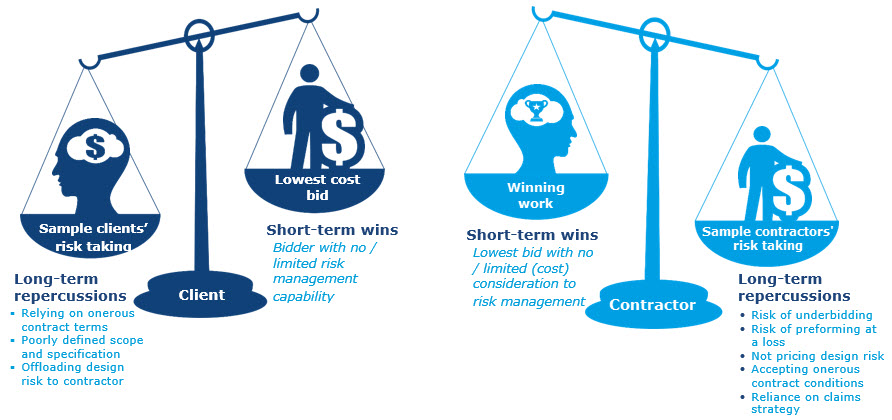
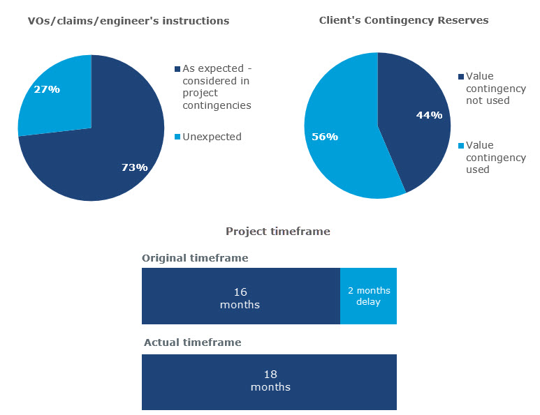
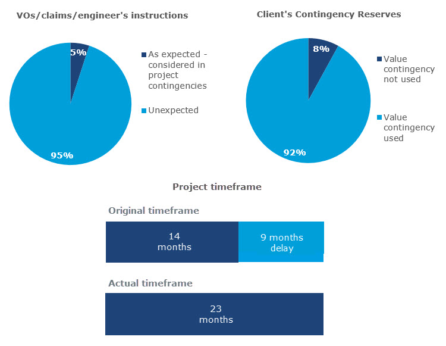

An effective approach to risk management during tendering and contract negotiations stages
In the Middle East, risk management has been largely overshadowed by risk taking and the ill-conceived allocation of risk during the tendering and contract negotiation stages. This is often either a result of contractors submitting low bids in order to win work, without giving due consideration to risk, or clients overlooking the risk management capabilities of a contractor and engaging a bidder who proposes the lowest price.
In the absence of an effective approach to risk, coupled with a “lowest bidder” approach, both client and contractor are capitalising on short-term wins. Risk taking has its price tag – it’s a hidden and unpredictable cost that may eventually cause budget and/or project overruns.
Leaving the decision making for a contractor’s appointment to be solely based on cost could, if not managed correctly, open the door to substantial issues during the delivery phases. As well as competitive costs, an understanding of the contractor’s capability to deliver the project coupled with their experience of managing risk, are vital procurement risk management factors.
Examining examples of good risk management could unlock insights and help decision makers implement best industry practices during the contract and negotiated tendering stages.
Figure 1: Weighing risk scenario – peak risk management issues during the tendering and contract negotiation phases

Project scenario - an intelligent risk management at the right time
The sample below is taken from a regional project that had a successfully embedded risk management process in the contract and negotiated tendering phases. The process mapped samples of:
- Proper understanding of risk management and its importance
- Proper evaluation of bidders’ risk management competences
- Assessment of bidders’ capacity/capability to manage risk
- Inclusion of risk management KPIs in the executed contract.
Negotiated tendering stage
The tender process was split into two phases; Technical Evaluation and Commercial Evaluation.
In the first phase the client set up a risk management team to support the tender process. The team ensured the tender package evaluation criteria included ‘risk management capabilities’.
From a pre-determined scoring matrix, the bidders were required to achieve a minimum score of 70 points out of which 15 points were allocated to their risk management capabilities.
Upon meeting this threshold during the technical evaluation the bidders were then allowed to proceed to the second phase, commercial evaluation.
The principle was that only a technically qualified bidder with the lowest acceptable price was to be appointed.
The case study project used a traditional procurement route (design, bid, and build). However, a rigid procurement risk management process was well planned and implemented from the design stage as the architects were subject to the same tendering process in this construction project. A project design risk register enabled the risk team to understand the design risks that could affect the project through to the construction stage.
The register was detailed and categorised into respective project risk categories, such as, but not limited to:
- Construction
- Procurement
- Approvals
- External
- Logistics
- Interfaces
- Testing and commissioning.
What is risk management in construction?
Risk management in construction is the process of identifying issues that could have a negative impact on a project, then assessing and evaluating these impacts to minimise the effects they have commercially. In construction, as in other industries, the process involves a risk register, a critical document which lists all the significant risks involved in a project. As the initial risks are assessed, the risk register is updated with internal information surrounding the costs and benefits of each risk. These initial risks can include lack of coordination in the supply chain, higher than expected running costs or a lower than expected income for a project.
In summary, the client had a strategic approach to risk. This was supplemented by an up to date project design risk register and client’s risk register, both of which were developed and maintained from the concept design stage. As a result of this approach the client was able to effectively evaluate the bidders’ submissions against their criteria and assessed the bidders risk management capabilities. See table below for criteria.
Table 1: Risk assessment criteria during first phase
| Criteria | Description | Max score |
|---|---|---|
| 1 | Project risk management plan and risk presentation | 5 |
| 2 | Project risk register | 5 |
| 3 | Risk and opportunity quantitative assessment | 5 |
| Total points | 15 | |
For each criterion mentioned in Table 1, a maximum score of five points was possible. To mark this the client’s team assessing the risks mapped the potential risk events against project milestones, work breakdown structure and identified activities. This approach helped the assessment team understand the extent to which the tenderer has:
- Covered real prospective project risks
- Planned sound mitigation actions
- Proposed credible risk matrix in compliance with the project scope of work.
Table 2: Scoring approach
| Description | Grade |
|---|---|
| Exceeding expectation | 5 |
| Meeting expectation | 4 - 3 |
| Below expectation | 2 - 1 |
| Not acceptable | 0 |
Project risk management plan and risk presentation
A strategic approach to risk is necessary from the outset. A client’s risk management representative evaluated the bidders at tender stage on the basis of their capability.
Project risk register
The client’s risk management representative assessed the submitted project risk register on the grounds of the bidder’s capability to mitigate all relevant risks, such as, but not limited to:
- Construction
- Contract
- Engineering
- External
- Approvals
- Logistics
- Interface
- Management
- Testing and commissioning, close-out.
This helped link the risks to the project milestones. It also helped understand the effectiveness of the risk mitigation actions. Finally, the client assessed the feasibility of the proposed risk matrix in the context of the project.
Risk and opportunity quantitative assessment
The client’s risk management representative assessed the extent of the bidder’s ability to quantify the anticipated time and cost of the potential risks and opportunities encountered throughout the project lifecycle. They also evaluated how those risks reflected on the bidders’ proposal, i.e. the impact they had on the cost and on the programme.
Contract risk management: negotiating the contract with the selected bidder
The client’s risk management team incorporated “risk management requirements” into the contract as sub-clauses of the “project control requirements”. Some of the client’s risk management requirements were as follows:
- The contractor shall prepare and submit for approval within x weeks from the effective date a clear risk management plan, shall comply with client’s risk management policy and ISO 31000 “risk management – principles and guidelines showing ……………,
- The contractor shall prepare and submit along with their monthly report a completed and updated risk register completed in accordance with the risk register template attached in annexure x.
- Notwithstanding the above, a deduction of [local currency] XXX/- shall be made per day from the contractor's monthly payments for each day of delay in submitting the risk management plan for any reason for more than x (x) working days.
- The contractor shall participate in monthly risk management meetings held in accordance with the contract specification.
- The risk management meetings will cover the parties obligations under the contract and allocation of risk mitigation measures and actions to be taken by each party within a specified time frame, to mitigate the consequences and/or the probability of such risks.
Did it work?
The simple answer is yes, and it is based on a comparative analysis of this project and another similar scale construction project that was under the same programme portfolio, but failed to consider risk management during tendering and contract negotiation phases. The circumstances of both projects were very similar (e.g. project duration, project scope of work, project budget, specification, procurement route, project execution plan, contraction classification, project designer, etc.).
The comparative analysis undertaken shows that the project that used the risk management process during the tendering and contract negotiation stages as detailed above benefitted from fewer unexpected/unplanned variations (68 percent) and lower contingency expenditure (36 percent) than the project that did not use the risk management approach. Similarly the delivery time was improved by the use of the risk management approach. The project using this approach was delayed by two months compared with a delay of nine months for project that did not include the risk management process during the tender and contract negotiation stages.
Although our sample good practice project was subject to multiple variations, claims, engineer’s instructions, and project changes, around 73 percent of the changes were identified / managed / quantified in the form of risks, response plans and risks assessments during the early stages, i.e. the risk management in the contract negotiation and tender stages. The positive results of this process were:
- 20 percent of overall prospective risks were accepted and their potential cost and time impact were considered in the client’s provisions for contingencies
- 25 percent of the overall potential risks in response strategy were subject to an ‘avoid strategy’ – the potential cost and time of the relevant response actions were considered in the client’s provisions for contingencies
- 55 percent of the overall potential risks were subject to the planned mitigation strategy - the potential cost and time of the relevant response actions were considered in the client’s provision for contingencies
Figure 2: Good practices risk management results

The comparative study project failed to consider risk management during the tender and contract negotiation phases, and did so later only as the unplanned risks started to materialise. The overall project performance was poor. The project encountered a significant number of unplanned variations, claims, and engineer’s instructions mainly due to unexpected design changes by the stakeholders, design discrepancies, lack of clarity of the detailed design drawings, all of which stimulated the contractor’s information requests, claims, etc.
Figure 3: Limited consideration of contractor’s risk capability during tendering/contract negotiation

Ignore risk management at your own risk
Overlooking risk management during the tender and contract negotiation phases will most likely have irreversible repercussions on a project.
Although there is ample evidence to show that an intelligent approach to risk management during the initial phase has a substantial impact on the overall project success, this article has focused on one case study to shed some light on good practice, demonstrating:
- How risk management was imbedded in the tendering and contract negotiation process
- How risk management was assessed
- What was the outcome of this approach compared to a similar scale project with limited consideration of risk management
In summary, our experience in the Middle East has shown that a thorough approach to risk management during the tendering and contract negotiation stages will lead to a reduction in cost and programme risks. A simple investment in risk management will be far outweigh the benefit of short term wins!